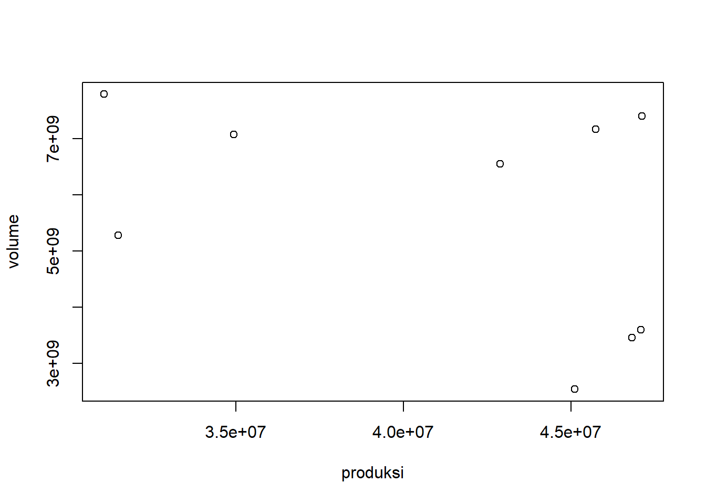

library('tidyverse')
library('readxl')
library('WDI') # tambahkan library lain jika diperlukan
library('ggplot2')
library('readr')
library('data.table')
library('kableExtra')
library('car')
library('lmtest')Pengaruh Produksi Kelapa Sawit terhadap Volume Ekspor CPO Indonesia
Metode Penelitian Politeknik APP Jakarta
1 Pendahuluan
1.1 Latar belakang
Indonesia merupakan salah satu produsen kelapa sawit terbesar di dunia. Dengan menyumbang sekitar 50% dari produksi global minyak kelapa sawit, komoditas ini juga memainkan peran penting dalam perekonomian nasional, terutama sebagai penyumbang devisa negara melalui ekspor Crude Palm Oil (CPO).
Berdasarkan data dari Badan Pusat Statistik, produksi kelapa sawit di Indonesia tahun 2022 sebanyak 46,82 juta ton, meningkat 1,29 % dibadingkan tahun sebelumnya. Produksi kelapa sawit di Indonesia yang tinggi seringkali diasumsikan dapat meningkatkan volume ekspor CPO. Namun, fluktuasi dalam volume ekspor tidak hanya dipengaruhi oleh tingkat produksi tetapi juga oleh berbagai faktor, termasuk kebijakan domestik, kondisi pasar global, dan tren permintaan.
Pada penelitian kali ini saya bertujuan untuk menganalisis pengaruh produksi kelapa sawit terhadap volume ekspor CPO Indonesia.
1.2 Ruang lingkup
Penelitian ini akan berfokuskan pada hubungan antara tingkat produksi kelapa sawit dan volume ekspor CPO selama periode 2015–2023. Ruang lingkup penelitian ini mencakup data produksi sawit nasional dan volume ekspor CPO selama periode 2015-2023 (Time Series) dari beberapa sumber resmi seperti Badan Pusat Statistik (BPS), Trade Map dan Studi Literatur terkait.
1.3 Rumusan masalah
- Apa pengaruh produksi kelapa sawit terhadap volume ekspor CPO Indonesia? 2 Apakah terdapat hubungan signifikan antara peningkatan produksi kelapa sawit dan perubahan volume ekspor CPO?
- Apakah ada faktor lain yang mempengaruhi volume ekspor CPO Indoensia?
1.4 Tujuan dan manfaat penelitian
Tujuan penelitian ini adalah untuk mengidentifikasi dan menganalisis hubungan antara produksi kelapa sawit dan volume ekspor CPO Indonesia. Dengan fokus pada data 2019–2023, penelitian ini diharapkan dapat memberikan analisis yang bermanfaat dan memberikan informasi yang berguna bagi pemangku kepentingan, seperti pemerintah, pengusaha kelapa sawit, dan pembuat kebijakan perdagangan dalam merumuskan strategi peningkatan ekspor.
1.5 Package
Ini tidak wajib ada di tulisan anda tapi anda dapat menunjukkan Packages yang digunakan antara lain sebagai berikut:
2 Studi pustaka
Kelapa Sawit
Indonesia adalah salah satu produsen utama kelapa sawit di dunia, berkontribusi sekitar 50% terhadap produksi global. Kelapa sawit adalah tanaman perkebunan yang menghasilkan tandan buah segar (TBS). Produksi ini merupakan bahan utama untuk menghasilkan minyak kelapa sawit mentah atau Crude Palm Oil (CPO) melalui proses pengolahan di pabrik. Tingkat produksi ini sering digunakan sebagai indikator kapasitas sektor perkebunan kelapa sawit di Indonesia.
Volume Ekspor CPO
CRUED PALM OIL atau CPO merupakan produk turunan dari kelapa sawit, volume ekspor CPO mengacu pada jumlah minyak kelapa sawit mentah yang diekspor ke pasar internasional. Volume ini mencerminkan seberapa besar permintaan global terhadap CPO Indonesia serta daya saing Indonesia di pasar dunia.
Dalam penelitian ini, hubungan antara produksi kelapa sawit dan volume ekspor CPO akan dianalisis menggunakan data 2019–2023 dengan pendekatan regresi linier sederhana. Data akan digunakan untuk melihat sejauh mana produksi kelapa sawit berpengaruh langsung terhadap ekspor CPO.
3 Metode penelitian
3.1 Data
data <- read_excel("C:/Users/vinz/Desktop/Penelitian Batu/Produksi Kelapa Sawit dan Volume Ekspor CPO (2019-2023).xlsx", col_names = TRUE)
# Buat tabel dengan caption dan styling
kable_output <- kbl(data, caption = "Tabel. 1 Produksi Kelapa Sawit dan Volume Ekspor CPO (2015-2023) Ton") %>%
kable_styling(bootstrap_options = c("striped", "hover", "condensed", "responsive"))
# Menampilkan tabel
kable_output| tahun | produksi | volume |
|---|---|---|
| 2015 | 31070015 | 7788549862 |
| 2016 | 31487986 | 5283953440 |
| 2017 | 34940289 | 7076061207 |
| 2018 | 42883631 | 6554494913 |
| 2019 | 47120247 | 7401796017 |
| 2020 | 45741845 | 7170956360 |
| 2021 | 45121480 | 2543057266 |
| 2022 | 46819672 | 3455677465 |
| 2023 | 47084299 | 3595946258 |
Penelitian ini menggunakan data Badan Pusat Statistik dan Trade Map
data <- read_excel("C:/Users/vinz/Desktop/Penelitian Batu/Produksi Kelapa Sawit dan Volume Ekspor CPO (2019-2023).xlsx", col_names = TRUE)
plot(data$produksi,data$volume,xlab="produksi",ylab="volume")
reg1<-lm(volume~produksi,data=data)

3.2 Metode analisis
Metode yang dipilih adalah Regresi Univariat dengan 1 variabel independen dan 1 variable dependen. Penelitian ini bermaksud mencari hubungan antara Produksi kelapa Sawit dan Volume Ekspor CPO Spesifikasi yang dilakukan adalah:
\[ Y(VolumeEksporCPO)=\beta_0 + \beta_1. log(ProduksiKelapaSawit)+ \epsilon \] \[ Dimana: - $'Produksi Kelapa Sawit$ adalah x dan $Volume Ekspor CPO$ adalah y. - **log(y)**: Volume Ekspor CPO - **beta 0**: konstanta/intercept dalam model - **log(beta 1)**: koefisien yang akan diuji untuk melihat pengaruh masing-masing variabel independen terhadap volume ekspor CPO - **e**: Kesahalahan (residual) pada observasi \]
4 Pembahasan
4.1 Pembahasan masalah
Berdasarkan data yang telah di lakukan penelitian,
data <- read_excel("C:/Users/vinz/Desktop/Penelitian Batu/Produksi Kelapa Sawit dan Volume Ekspor CPO (2019-2023).xlsx", col_names = TRUE)
print (data)# A tibble: 9 × 3
tahun produksi volume
<dbl> <dbl> <dbl>
1 2015 31070015 7788549862
2 2016 31487986 5283953440
3 2017 34940289 7076061207
4 2018 42883631 6554494913
5 2019 47120247 7401796017.
6 2020 45741845 7170956360
7 2021 45121480 2543057266
8 2022 46819672 3455677465.
9 2023 47084299 3595946258.Berdasarkan data diatas, tren Produksi kelapa sawit menunjukkan peningkatan yang signifikan dari tahun 2015 hingga 2019, dengan sedikit penurunan pada tahun 2020 dan 2021 yang kemungkinan disebabkan oleh pandemi dan juga perubahan kebijakan dari pemerintah, tetapi kembali meningkat pada tahun 2022 dan 2023. Tren Volume ekspor CPO juga menunjukkan fluktuasi yang signifikan, dengan lonjakan besar pada tahun 2017 dan 2019, namun menurun drastis pada tahun 2021 yang disebabkan hal yang sama pada tren produksi kelapa sawit dan kemudian sedikit pulih pada tahun 2022 dan 2023.
4.2 Analisis masalah
Hasil regresinya adalah
summary(reg1)
Call:
lm(formula = volume ~ produksi, data = data)
Residuals:
Min 1Q Median 3Q Max
-2.661e+09 -1.546e+09 6.578e+08 1.084e+09 2.436e+09
Coefficients:
Estimate Std. Error t value Pr(>|t|)
(Intercept) 1.059e+10 4.184e+09 2.530 0.0392 *
produksi -1.193e+02 9.993e+01 -1.193 0.2716
---
Signif. codes: 0 '***' 0.001 '**' 0.01 '*' 0.05 '.' 0.1 ' ' 1
Residual standard error: 1.938e+09 on 7 degrees of freedom
Multiple R-squared: 0.1691, Adjusted R-squared: 0.05036
F-statistic: 1.424 on 1 and 7 DF, p-value: 0.2716bptest(reg1)
studentized Breusch-Pagan test
data: reg1
BP = 2.6963, df = 1, p-value = 0.10065 Kesimpulan
Hasil Penelitian menunjukkan bahwa produksi kelapa sawit memiliki hubungan negatif dengan volume ekspor CPO, namun hubungan tersebut tidak signifikan secara statistik (p-value untuk koefisien produksi adalah 0.2716, yang lebih besar dari 0.05) yang berarti tidak ada bukti yang cukup untuk menganggap bahwa produksi kelapa sawit berpengaruh langsung terhadap volume ekspor CPO pada periode 2019-2023.
Selain itu, nilai R-squared sebesar 0.1691 menunjukkan bahwa model regresi ini hanya mampu menjelaskan sekitar 16.91% dari variasi dalam volume ekspor CPO, mengindikasikan bahwa model ini memiliki daya prediksi yang rendah. Oleh karena itu, faktor-faktor lain yang tidak tercakup dalam model ini kemungkinan lebih berpengaruh terhadap perubahan volume ekspor CPO.
Uji Breusch-Pagan yang dilakukan untuk menguji adanya heteroskedastisitas menunjukkan p-value sebesar 0.1006, yang lebih besar dari 0.05, sehingga tidak ada bukti yang cukup untuk menganggap bahwa model regresi ini mengalami masalah heteroskedastisitas. Artinya, varians residuals model ini relatif konstan di seluruh tingkat produksi kelapa sawit.
Mengingat daya prediksi model yang rendah, disarankan untuk melakukan penelitian lebih lanjut dengan memasukkan variabel-variabel lain yang dapat mempengaruhi volume ekspor CPO, seperti harga pasar internasional, kebijakan perdagangan, dan faktor ekonomi makro lainnya. Penggunaan model yang lebih kompleks atau analisis tambahan dapat memberikan wawasan yang lebih mendalam mengenai faktor-faktor yang mempengaruhi volume ekspor CPO Indonesia.
6 Referensi
Pusat Data dan Sistem Informasi Pertanian. (2024). Analisis Kinerja Perdagangan Komoditas Kelapa Sawit 2024. Sekretariat Jenderal Kementerian Pertanian.
TradeMap. (n.d.). Bilateral Trade Statistics. Retrieved from https://www.trademap.org/Bilateral_10D_TS.aspx?nvpm=1%7c360%7c%7c000%7c%7c151110%7c%7c%7c8%7c1%7c1%7c2%7c2%7c1%7c1%7c1%7c1%7c1
Badan Pusat Statistik. (n.d.). Ekspor dan Impor Indonesia. Retrieved from https://www.bps.go.id/id/exim
Palmoilina. (n.d.). Sawit dan Devisa Ekspor. Retrieved from https://palmoilina.asia/jurnal-kelapa-sawit/sawit-dan-devisa-ekspor/